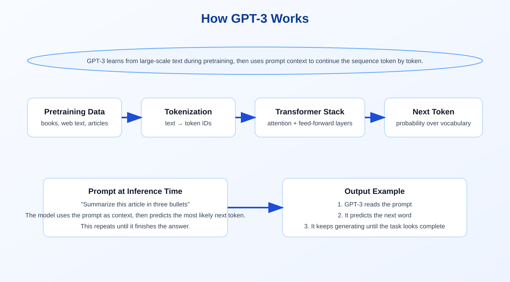
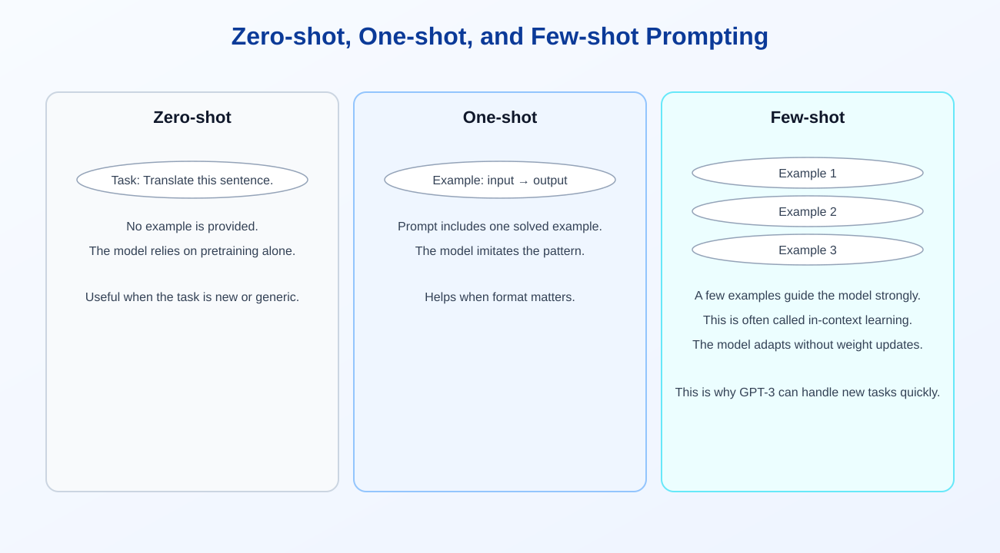

How GPT-3 Works: Tokens, Pretraining, and Prompting
My notes on GPT-3 came down to one idea: it can take a task, see a few examples or none at all, and still continue the pattern because the model has already learned a huge amount during pretraining.
What GPT-3 Is
GPT-3 is a large autoregressive language model. In practical terms, it reads text left to right and predicts the next token repeatedly until the answer is complete.
The important part is not just size. GPT-3 was trained at scale, so it can generalize to many tasks without task-specific retraining.
The Basic Pipeline
Think of GPT-3 as a sequence engine with these steps:
- Text enters as a prompt.
- The text is broken into tokens.
- The tokens are turned into embeddings.
- The transformer stack processes the token sequence.
- The model predicts the next token.
- The prediction is appended and the loop continues.

What a Token Really Means
A token is a unit of text that the model reads. It may be a whole word, part of a word, a punctuation mark, or a smaller subword piece depending on the tokenizer.
This matters because the model does not think in letters or sentences. It thinks in token sequences.
Pretraining and Why It Matters
GPT-3 is trained first on very large text datasets. That pretraining teaches it language patterns, syntax, facts, and common reasoning structures.
After pretraining, the model can solve new tasks from prompts alone, which is the big shift that made GPT-3 feel different from older systems.
Zero-shot, One-shot, and Few-shot Learning
The notes on your page point to the key prompt modes:
- Zero-shot: solve the task with no examples.
- One-shot: solve the task after seeing one example.
- Few-shot: solve the task after seeing a few examples.
These are all examples of in-context learning. The model adapts from the prompt itself rather than from new weight updates.

Zero-shot
You give the instruction only. This is useful when the task is broad enough that the model can infer the pattern from its pretraining.
Few-shot
You provide a few examples in the prompt. This often improves format consistency and task accuracy, especially for structured outputs.
Why This Feels Like Magic
GPT-3 can generate new responses because it is not memorizing one fixed script. It is continuing a sequence based on statistical patterns learned from large-scale training.
That is why the same model can translate, summarize, classify, or write examples after only prompt changes.
Key Takeaway
GPT-3 works by combining large-scale pretraining with token-by-token generation and in-context learning. The prompt matters, the examples matter, and the model’s pretrained knowledge is what makes the whole thing useful.